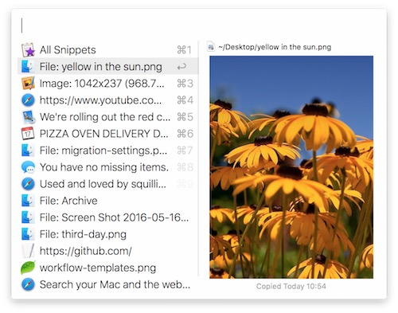

I recently started a shiny new job, and got a shiny new Macbook Pro to go with it. Having spent most of my personal and professional life on Windows, I knew that an adjustment period would have to follow. Below are my impressions, the good, bad, and the ugly side of adjusting to One Cupertino Way after a lifetime on Windows.
One of my biggest concerns before the big switch were actually keyboard-related. I'm a Windows Power User™ (don't laugh!), and do most of the things with keyboard shortcuts. I have my favorite Windows productivity tools and terminal replacements bound to specific shortcuts, which I use every day. I would have to re-learn many shortcuts, which I consider to be the worst part of the whole experience. I made it a special effort not to remap any of the default Mac keys, so I could learn to use any Mac (of which there are plenty here).
Before embarking on my new adventure, I had asked on twitter for survival tips, and am very thankful to everyone who contributed!
Here are the tips in no particular order, which made my initial experience much more "familiar":
Brew
Brew (short for Homebrew) is like Chocolatey for Mac! Brew is a package manager which lets you install things from the command line. A more correct comparison would be: brew cask is to Mac what choco is to Windows: Cask is an extension of Brew that lets you install applications, while plain brew is for installing from source.
Shell
 Speaking of command line, I knew from before that Macs have a vastly superior shell experience, but I had to enable it first, by installing a few things: iTerm2, a terminal replacement for OS X, and using
Speaking of command line, I knew from before that Macs have a vastly superior shell experience, but I had to enable it first, by installing a few things: iTerm2, a terminal replacement for OS X, and using zsh instead of Bash, by way of Oh My Zsh setup. Not having any specific preference, that's what I've done, and I've very happy for it!
Specific tips: Solarized Dark theme for iTerm2, and agnoster theme for Oh My Zsh, and a patched font to go with it, if you don't see the status icons.
In addition, I have installed Autojump via brew, (which was the inspiration for my favorite PowerShell tool Jump-Location), and enabled it in Oh my Zsh using the autojump plugin (edit ~/.zshrc to add it to the plugins entry, e.g.:)
plugins=(git zsh-autosuggestions autojump)Productivity
Right off the bat, I was advised to buy Alfred a productivity tool for the Mac, which combines a launcher with a powerful search. I ended up buying it within the first 20 minutes because of the Clipboard History feature (which is a paid "Powerpack" addon). On Windows, I cannot live without my beloved Ditto clipboard manager, and Alfred offered a great alternative. Buying Alfred opens up additional possibilities via Workflows, which I'll mention later.
Keyboard
 I love my ergonomic Microsoft Natural 4000 keyboard, and I refuse to type on anything else (which includes the keyboard on the Mac itself). Between the choice of the very thin and very painful-looking Apple Keyboard and Magic Mouse and a Microsoft Sculpt keyboard (with a Sculpt Ergonomic mouse), choosing my setup was a no-brainer.
I love my ergonomic Microsoft Natural 4000 keyboard, and I refuse to type on anything else (which includes the keyboard on the Mac itself). Between the choice of the very thin and very painful-looking Apple Keyboard and Magic Mouse and a Microsoft Sculpt keyboard (with a Sculpt Ergonomic mouse), choosing my setup was a no-brainer.
The problem, of course, is that Mac uses a different keyboard layout than Windows, specifically it has the ⌘ (Command/Cmd) key, which is used for most things Ctrl is used in Windows. To overcome this mismatch (and remain consistent with the default keyboard layout on the Mac), I used an excellent util called Karabiner, which is a keyboard remapping on steroids.
On the Mac, the rightmost control keys are: Control, Option and Command. To match the Mac layout, I mapped the Windows key to Option, and Alt to Command using the following Karabiner settings file:
...
<item>
<name>Left ALT to COMMAND_L and vice versa</name>
<identifier>private.left_alt_to_command_l</identifier>
<autogen>__KeyToKey__ KeyCode::OPTION_L, KeyCode::COMMAND_L</autogen>
<autogen>__KeyToKey__ KeyCode::COMMAND_L, KeyCode::OPTION_L</autogen>
</item>
...And some other tweaks. For the full listing, see this gist. To import it, go to Karabiner preferences, to the Misc & Uninstall tab, then in the Custom Settings press Open private.xml, and save the XML in that file. Finally, go to the Change Key tab and select the new custom settings you want to enable.
Update: looks like this is also possible to do without Karabiner, by adjusting the Modifier Keys in the Keyboard settings. In addition, this lets you select the specific keyboard you want to adjust (instead of having two separate profiles for Karabiner). Big thanks to Michael Martz for his comment below!

Screenshots
There are a few ways to take a screenshot on a Mac, most involve pressing several keys together. I found a nicer way to do this using an Alfred Workflow, which allows quickly launchig the screen capture tool from Alfred:

Misc
Other things I found useful/annoying when working on a Mac:
-
Installing Applications is the #1 difference between Windows and Mac - other than Brew mentioned earlier, the "standard" way to install applications on a Mac is simply dragging its icon to the Applications folder in Finder (Mac's "Explorer"). To remove the application, drag it to the trash can! Applications on the Mac are self-contained, no installers/uninstallers required.
-
Minimizing does not work the same as Windows: if you minimize the active window, it will shrink itself with a "Genie effect" next to the trash can, and won't be restored with
Command+Tab! (equivalent of Alt+Tab on Windows). To make tabbing work like Windows, Hide (Command+H) the active windows instead.Command+Qquits the application. (thanks to Jason Imison for the tips!) -
Selecting text behaves differently on a Mac: pressing
Command+Left/Rightjumps to the beginning/end of the line (holdingShiftwill select the text). To jump to the next/previous word, useOption+Left/Rightinstead (note: this doesn't seem to work in iTerm2 by default, it has to be configured to enable it.) -
Other shortcut keys which are different between Windows and Mac, in no particular order:
- In Chrome, selecting the address bar is
Command+Land not Command+D (muscle memory for Alt+D on Windows) - Switching between languages is
Command+Space. It's not possible to bind language switching to Command+Shift (like Alt+Shift on Windows)
- In Chrome, selecting the address bar is
The shortcuts found in all menus are represented by symbols, which can sometimes be annoying to remember (e.g. ⌘ for the Command Key, ⌥ for the Option Key). I have installed KeyCastr - a small keystroke visualization utility to help me remember which is which.
I'm sure I forgot a bunch of things, but the hardest thing to adjust to, I found, is the Command/Ctrl switch: things like copy and paste on a Mac are Command+C/Command+V, which require a thumb press on the Command, which is very uncomfortable at first (think pressing Alt+C instead of Ctrl+C on Windows.)
Overall, I'm happy with the experience. Things work a bit differently here, but it's not all bad. Most importantly, I finally have the best command line utility working on my Mac!